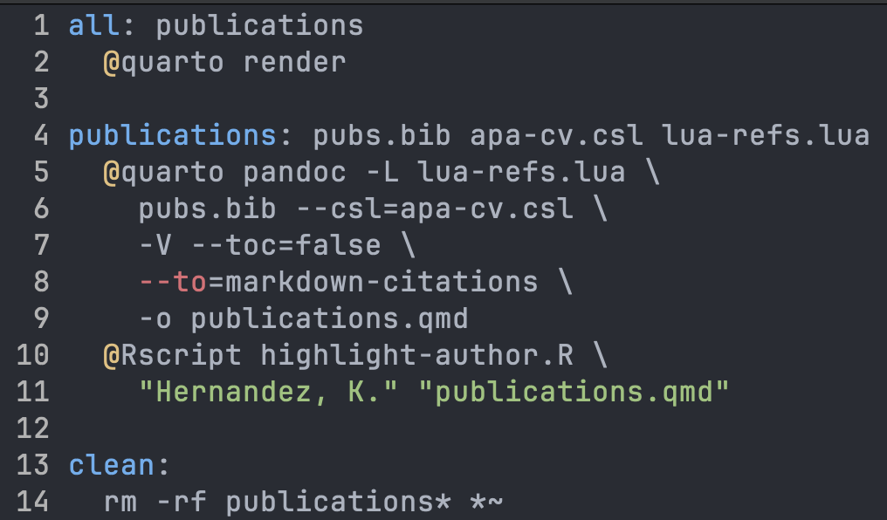

mkdir <your-username>.github.io
cd <your-username>.github.ioTerminal basics
pwdlists current directory;lslists directory content. For example, runls my-dirto know what is inside the directory calledmy-dir.cdstands for change directory. To navigate to a directory, use:cd <path-to-directory>;mvMoves or renames files. Usage:mv <old-name/location> <new-name/location>;
Pre-requisites
We assume you have:
Step 1: create a repo
In this workshop, we assume you are creating a personal web page. GitHub allows you to host a personal website for free under the domain <username>.github.io. To use this domain, we first need to create a GitHub repository named like that. For example, in this talk we will create a website for a user called statcomp-org, see the image below:

Step 2: Using our quarto template
Open a terminal window and navigate to a directory where you want to keep your website. On my laptop, I have a directory (or folder) called git-projects where I store all the git repos I work with. The following code chunk creates a directory to store your website locally and navigates to it.
Now, we obtain a template running the following command:
quarto use template swosc/quarto-templateYou will be asked the following questions. Type “Y” and enter and “.” and enter, respectively.
Quarto templates may execute code when documents are rendered. If you do not
trust the authors of the template, we recommend that you do not install or
use the template.
? Do you trust the authors of this template (Y/n) › Y
? Directory name: › .
Important
When running the command below, we are assuming your current “working directory” in the terminal is the directory where you are going to keep your website. Run pwd, to make sure you are working on the right directory.
Let us use ls to track the files that were generated in our directory:
ls
LICENSE.md Makefile _quarto.yml apa-cv.csl blog.qmd index.qmd lua-refs.lua posts profile.jpg pubs.bib styles.css
Tip
Always avoid creating filenames with special charaters or spaces.
The structure of the folder is as follows:
#| eval: false
.
├── LICENSE.md
├── Makefile
├── _quarto.yml
├── apa-cv.csl
├── blog.qmd
├── github
│ └── workflows
│ └── publish.yml
├── gitignore
├── index.qmd
├── lua-refs.lua
├── posts
│ ├── _metadata.yml
│ ├── post-with-code
│ │ ├── image.jpg
│ │ └── index.qmd
│ └── welcome
│ ├── index.qmd
│ └── thumbnail.jpg
├── profile.jpg
├── pubs.bib
└── styles.cssSee below a description on what each of those files are:
LICENSE.mdcontains the license for your website repo. Currently, the license in the template is a CC-BY license. That is, anyone is free to share and adapt, must give appropriate credit. You can use theusethispackage to change this license. See this link for thurther info.Makefilewill only be used if you wish to include a page in the website with your publications. If that’s the case, you should include your publications (inBibTeXformat) in thepubs.bibfile. Moreover, to highlight your name in the authorships, replaceHernandez, K.with your name within theMakefile. See the Figure below for a reference.

_quarto.ymlis perhaps the most important file we will keep. It will give instructions on how to design the website (more on this later).apa-cv.cslis a helper that controls the templates of the publications list that may be generated using the Makefile.blog.mdis the file that will control how your “blog” page looks like.githubis a folder that we need to rename to.github. It will help GitHub to publish your website online.gitignorerename to.gitignore. This file will store the name of the files you do not want to push to GitHub.index.qmdis the landing page of your website.lua-refs.luais aluascript that will be used to generate your publications list (optional).posts/is a folder containing your posts and some metadata (optional, only if you want to blog as well)- The
_metadata.ymlcontains some information on how to deal with your posts. In particular, it will tell GitHub avoid compiling them (we will compile the posts locally) - Each subfolder represents a blog post. Within the blogpost folder, we need a
index.qmdfile (more on this later).
- The
profile.jpgreplace this with your profile picture.pubs.bibs(optional) input your publications inBibTeXhere.styles.cssallows for further customization of the website.
Step 3: setting up git repo
The next step is to setup the git repo. Before doing so, let’s rename the .github and .gitignore files. This is achieved by running:
mv github .github
mv gitignore .gitignoreNow, let’s set the git repo and push the gitignore file to the remote repo.
git init
git add .gitignore
git commit -m "commiting gitignore"
git branch -M main
git remote add origin git@github.com:<your-username>/<your-username>.github.io
git push -u origin mainIf you want to get a grasp of how the website is looking like, run:
quarto preview
Note
You can use quarto preview to visualize the changes anytime you modify something on your quarto website.
Step 4: Let’s customize our website!
Note
You may use your preferred IDE to edit .qmd files. Popular choices are Rstudio, VScode, and (not so popular) emacs. For the last two, we advise you to install the appropriate extensions to enjoy all the capabilities of quarto.
First, we will customize the index.qmd file.
At the beginning, the index.qmd file will look like this:
#| eval: false
---
image: profile.jpg
about:
template: jolla
links:
- icon: twitter
text: Twitter
href: https://twitter.com
- icon: linkedin
text: LinkedIn
href: https://linkedin.com
- icon: github
text: Github
href: https://github.com
---
<Write somethign about yourself or your website>In general, we want to replace the href field under Twiter, Linkedin, and GitHub with the link to our own accounts. The profile.jpg file can also be changed (or we can just overwrite it).
There are 5 possible inputs for the template field. They are:
jolla(used in the provided template)trestlessolanamarqueebroadside
Play around with the different options to figure out which one suits you best.
Next, we can include more resources to the website as follows…
Step 4: Publishing
Publishing the website will be one of the easiest parts. We will use GitHub Actions (GA) and GitHub pages.
Basically, all you have to do is to go to your repository on GitHub, click on Settings > Pages. Next, under Build and Deployment, click on Deploy from branch and select GitHub Actions. Next, you should create a new branch called gh-pages. To do so, click on main, and then on View all branches. Next, create new branch. Name the new branch as gh-pages.
Now, every time you push your changes to github, the website will be deployed (published) at <your-username>.github.io.
Further resources (explore)
- Quarto website provides a bunch of resources;